Installing VS Code and some Popular Extensions:
-
This is the final tutorial in setting a Python development enviroment and tools in our system. You can find the previous parts here:
-
Creating Anaconda Environment and Installing ArcGIS Python API:
-
In this tutorial we will learn how to install Microsoft VS Code and some of its recommended extensions.
Steps
- Download VS Code.
- Install VS Code.
- Install recommended extensions.
- Create a Jupyter Notebook file and choose the conda environment kernel to use.
Download VS Code:
-
Open your web browser (here i am using Microsoft Edge) search bar type download VS Code and click enter to search.
-
Click on the first search result 'Download Visual Studio Code - Mac, Linux, Windows':
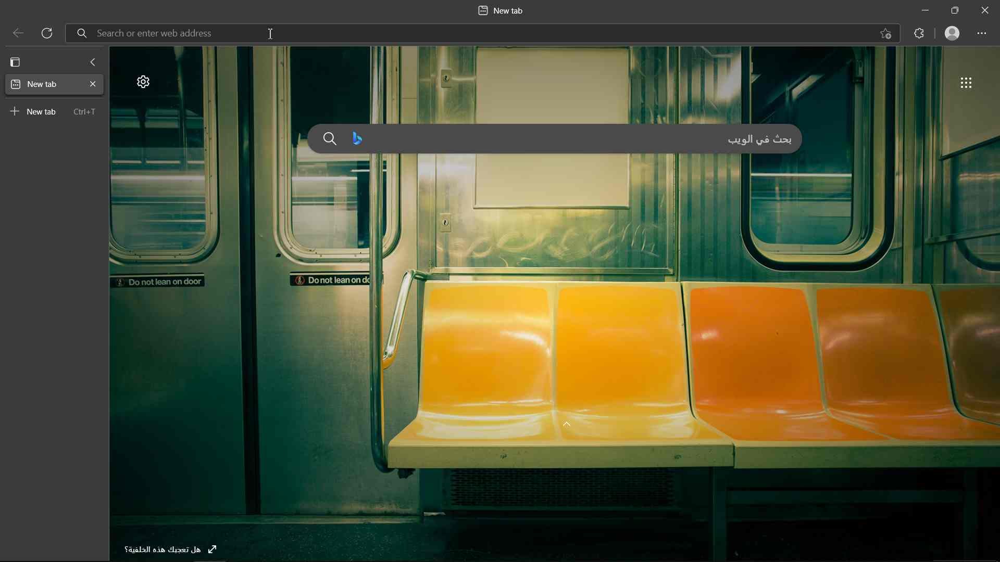


- Under the Windows logo click on 64 bit button next to User Installer:

- Wait until the download is completed.


Install VS Code:
- After you finish downloading the VSCode file go to your downloads folder and double click on the file to open it:

- Click on the I accept the agreement radio button then click next:

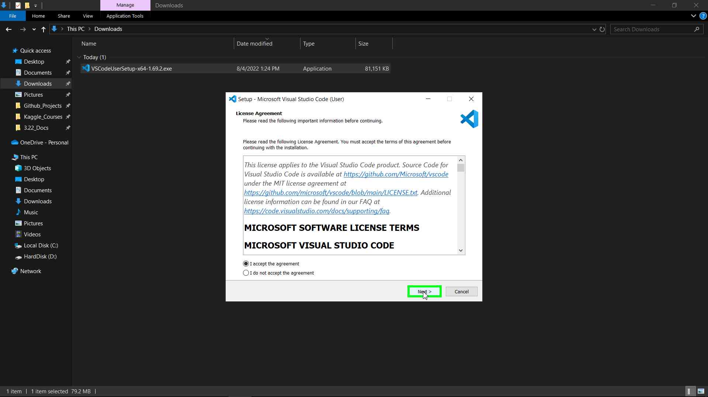
- Choose the install location by clicking on Browse and choose a folder, or click Next to accept the default installation location:

- Click Next to create a shorcut to VS Code in Start Menu Folder:
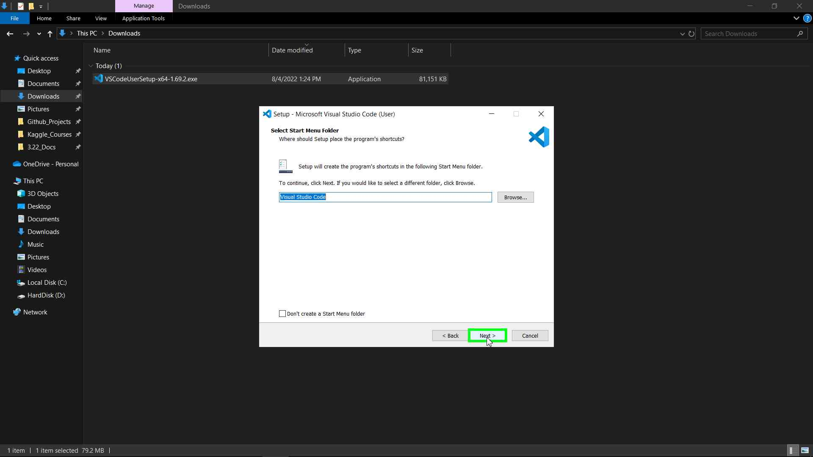
-
Make sure to check the Other options because these will help us later.
-
These options adds shortcuts to VS Code in context menus (when you right-click on something like Desktop, folder or a file) and register VS Code as the default program to open supported file types (.py, .html, .ipynb, .md and others). The last option adds VS Code to windows Path (this is used for example, if you want to open a file called test.py from the CMD or terminal you can type code test.py this will open the file in VS Code)
-
Click Next:
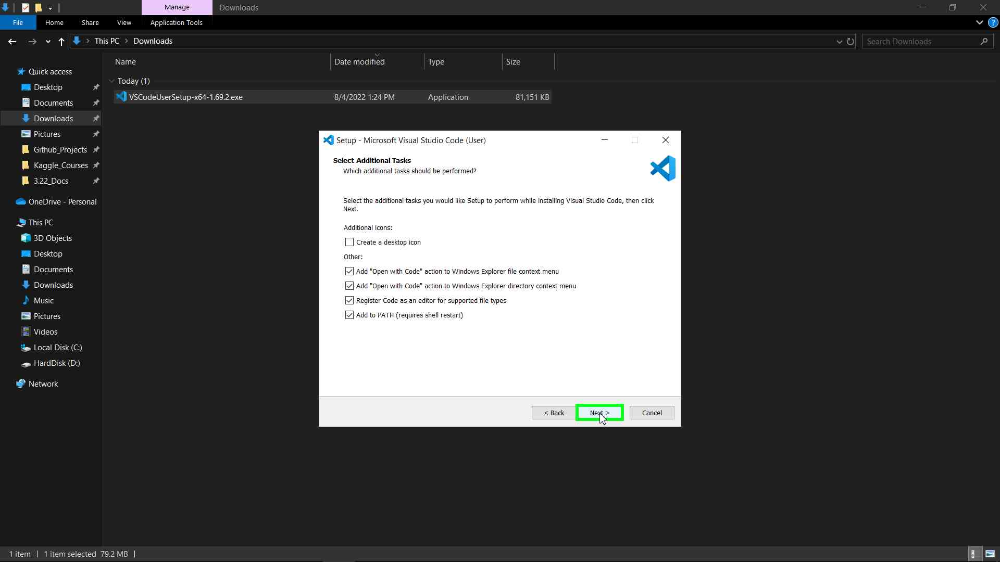
- Click Install:

- Wait until the installation is finished then click Finish to open VS Code:

Install Recommended Extensions:
-
When you open VS Code you will see a Get Started page which will help you to setup the application like choosing a color theme, Sync to other devices and others.
-
Do whatever you like to customize your application then close this page:
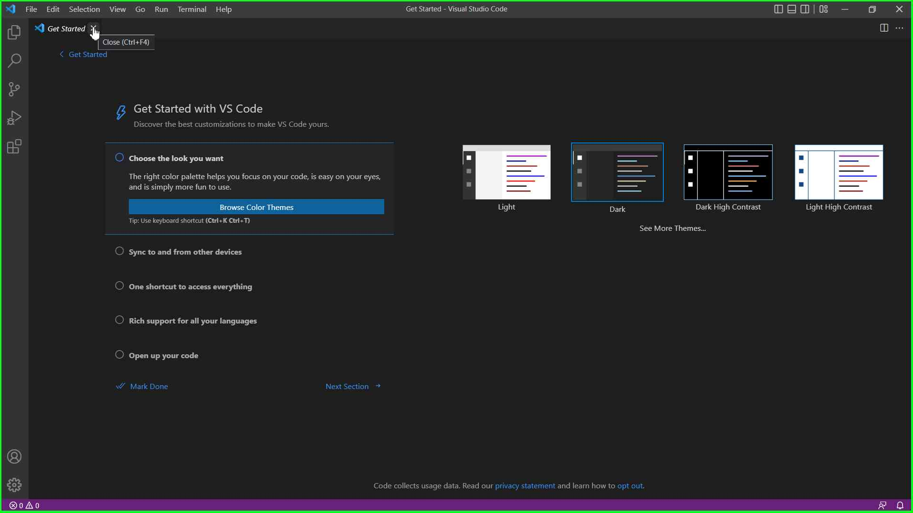
- In the left toolbar click on the last Icon to open the Extensions window:
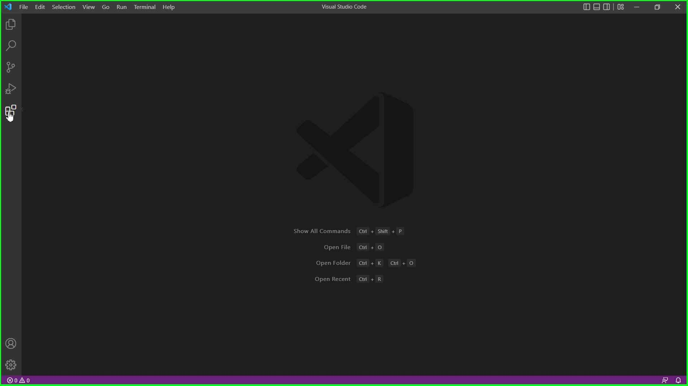
- From the Popular section Install Python extension, This will install tools for Python, Jupyter Notebook and others:
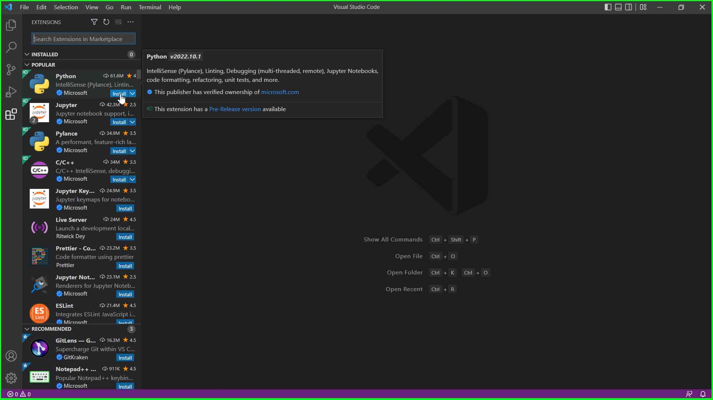

- Close the Get Started pages as we are not going to use them:
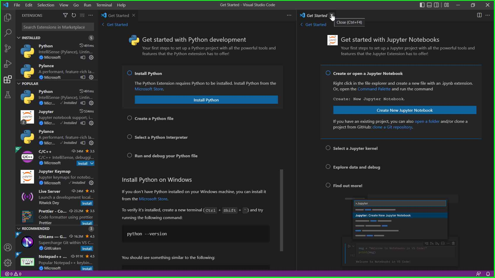
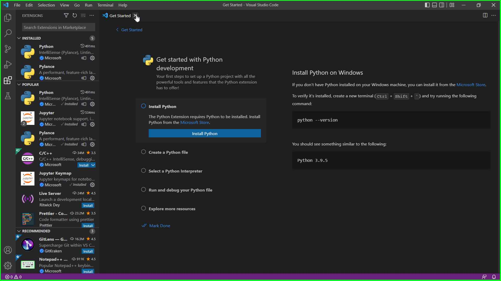
-
Install another two extensions called Live Server and Prettier as you will be using these extensions alot in the future:
-
Live Server extension allows you to run a local server on your computer which helps you to auto reload the web page with each change in your code (we will be using this extension in ArcGIS JavaScript API and Web Development Tutorials).
-
Prettier is a code formatter extension which help us in organizing our code files.
-


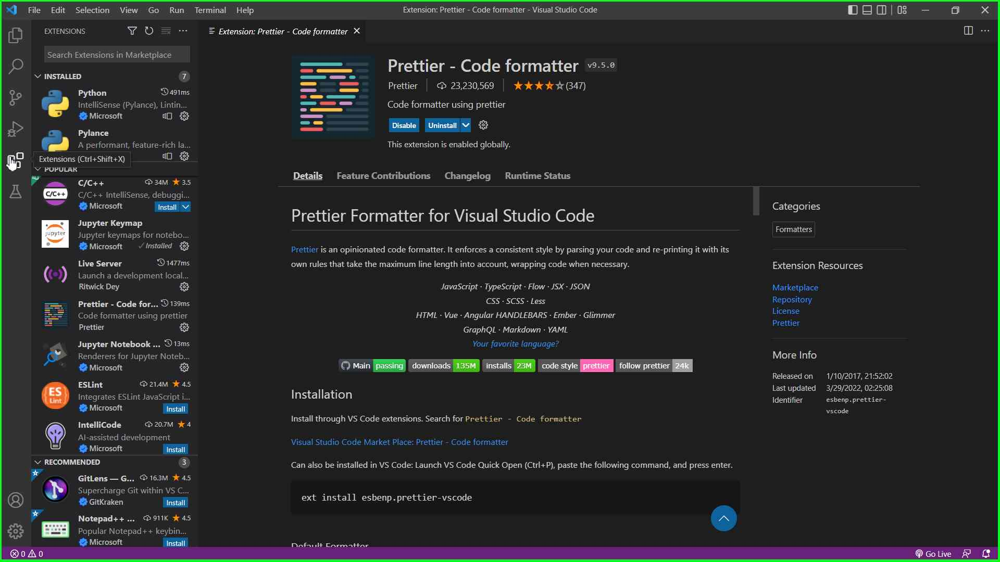
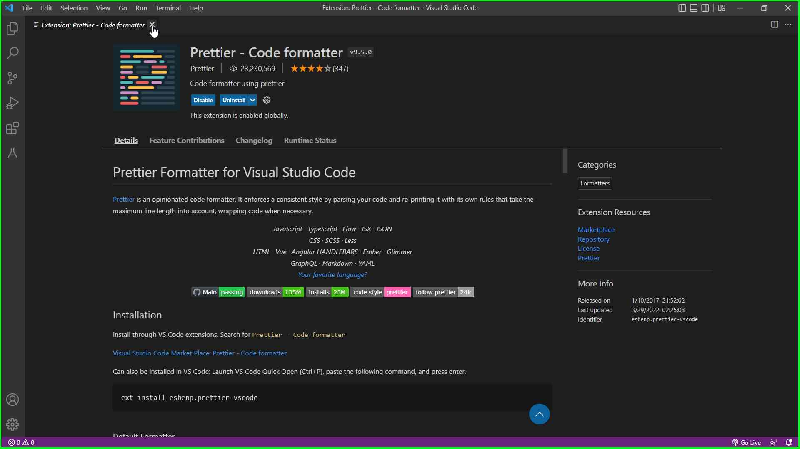
- Now we are ready for the final step.
Create a Jupyter Notebook file and choose the conda environment kernel to use:
-
Now we are going to create a Jupyter Notebook in VS Code.
-
Click on the File menu from the toolbar and choose New File...


- Click on Jupyter Notebook .ipynb support

-
A new file called Untitled-1.ipynb will be created.
-
Now, let's learn how to change between conda environments in VS Code.
-
On the top right of the file you will see a Kernel icon called Python 3.9.9 64-bit which means that the currently used environment is the global Python Environment.
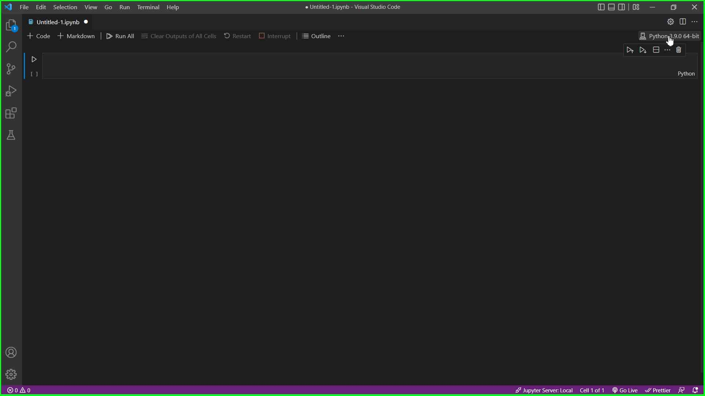
-
Click on the name and you will see all the available conda environments in our system.
-
Click on ArcGIS_Python_API Conda Env to choose it:

-
You will notice that the kernel name is changed to ArcGIS_Python_API (Python 3.9.13) which means that we are inside the conda environment we created on the previous tutorial here
-
And that's it. We reached the end of our tutorial sections where we learned how to download and install development tools we are going to use in our coding and analysis journey